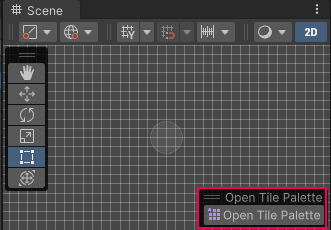

Tile Palette Preferences
To access the Tile Palette preferences window, go to Edit > Preferences… > 2D > Tile Palette. Customize the default behavior and default tools to suit your preference when editing in the Tile Palette window.

| 偏好设置 | 功能 | |
|---|---|---|
| Target Edit Mode | This sets the behavior for editing a target when a Prefab instance is selected in the Active Target list. Editing a Prefab instance in the Scene is not recommended due to performance issues. Note: This affects the Active Tilemap list in pre–2021.2 Editor versions. | |
| Enable Dialog | Displays a dialog which allows you to choose between editing the target in Prefab Mode or in the Scene. | |
| Edit In Prefab Mode | Select this to edit only the target Tilemap in Prefab Mode. | |
| Edit In Scene | Select this to edit only the target Tilemap in the Scene view. | |
| Active Targets Sorting Mode | Sets the method for sorting the Active Targets (affects Active Tilemaps in pre–2021.2 Editor versions) list in the Tile Palette. | |
| Alphabetical | Sorts the list in alphabetical order, with the first item at the top of the list. | |
| ReverseAlphabetical | Sorts the list in reverse alphabetical order, with the first item at the top of the list. | |
| Restore Edit Mode Active Target | Enable this to restore the targeted Active Target (Active Tilemap in pre–2021.2 Editor versions) in the Tile Palette window after returning to Edit mode from Play mode. | |
| Create Tile Method | Use this to specify the method by which Tile Assets are created when a Texture or a Sprite is dragged and dropped onto a Tile Palette. The default option is DefaultTile, which creates a Tile type Tile Asset. | |
| Show Open Tile Palette In Scene View | Enable this to show the Open Tile Palette overlay in the Scene view when selecting an object that interacts with the Tile Palette.  |
|
| Prefab Mode Grid Cell Size | Sets the default Cell Size when opening a Tilemap Prefab in Prefab Mode when there is no valid Grid in the Prefab. | |
| Prefab Mode Grid Cell Gap | Sets the default Cell Gap when opening a Tilemap Prefab in Prefab Mode when there is no valid Grid in the Prefab. | |
| Prefab Mode Grid Cell Layout | Sets the default Cell Layout when opening a Tilemap Prefab in Prefab Mode when there is no valid Grid in the Prefab. | |
| Prefab Mode Grid Cell Swizzle | Sets the default Cell Swizzle when opening a Tilemap Prefab in Prefab Mode when there is no valid Grid in the Prefab. | |
| Default Tile Palette Tools | This determines the list of tools which are shown in the Tile Palette window for use with Grid Brushes. The left panel stores the list of tools currently usable in the Tile Palette. The right panel stores the list of currently unused tools that can be added to the selection. To add a tool to the currently usable list, select it in the right panel and then select Add (+) to add it to the left panel. To remove a tool from the currently usable list, select it in the left panel and then select Remove (-) to remove it from the left panel. | |
| Save | Save changes made to the Default Tile Palette Tools. | |
| Revert | Revert changes made to the Default Tile Palette Tools. | |
| Reset | Resets the Default Tile Palette Tools back to the system default. | |